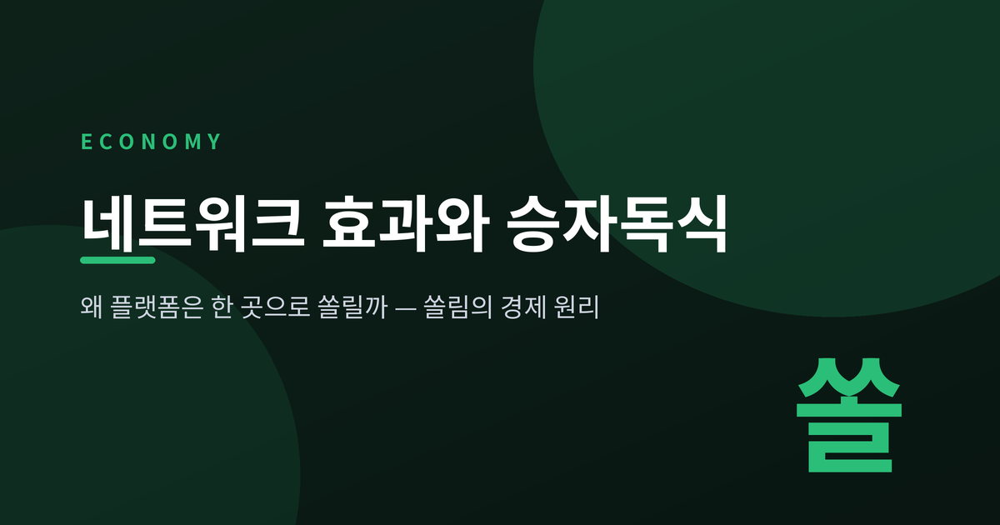
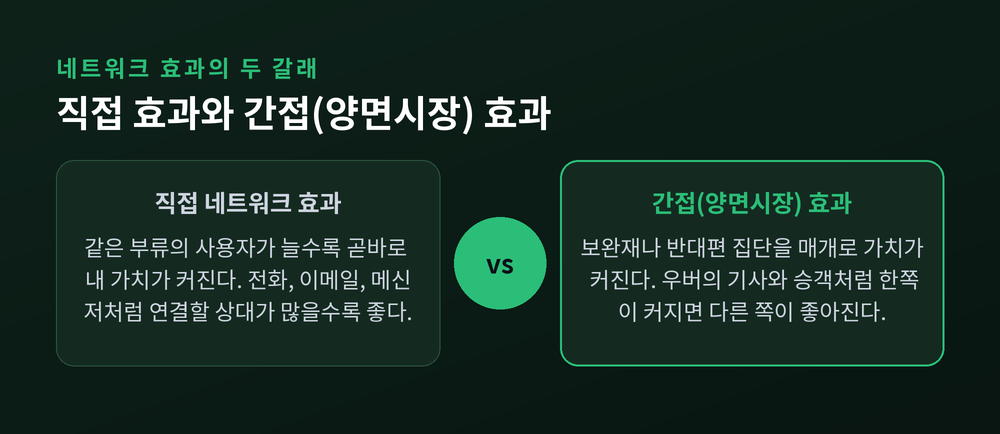
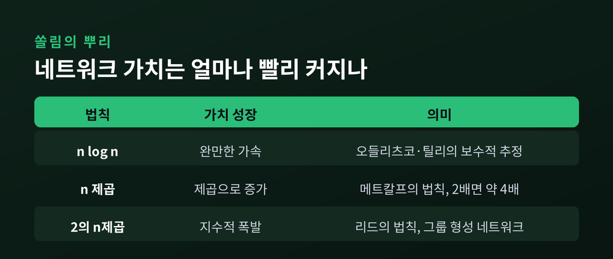
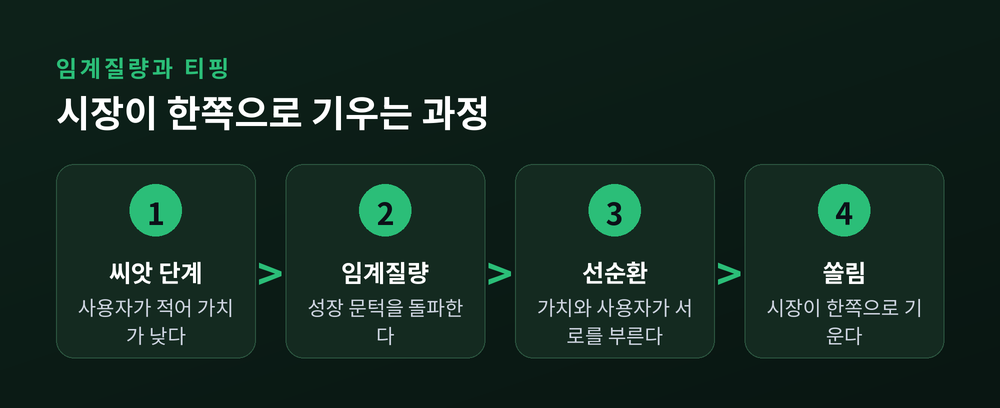
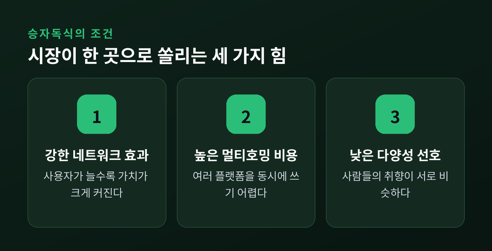
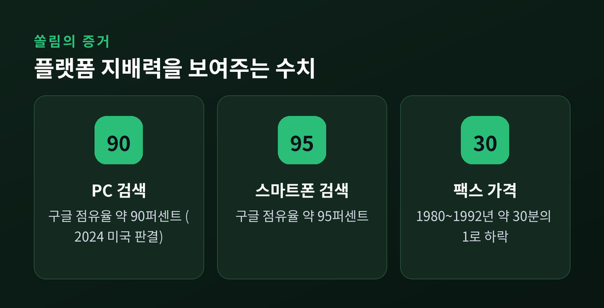

이번 글에서는 네트워크 효과가 어떻게 시장을 한 곳으로 몰아가는지 정리해 보겠습니다.
검색은 구글, 메신저는 카카오, 이런 쏠림에는 분명한 경제 원리가 있습니다.
그 원리를 하나씩 뜯어보려 합니다.
핵심부터 말씀드리면 이렇습니다.
어떤 서비스는 쓰는 사람이 많을수록 더 좋아집니다.
그 순간 시장은 좋은 제품이 아니라 큰 네트워크 쪽으로 기울기 시작합니다.
네트워크 효과는 사용자가 늘수록 각 사용자가 얻는 가치가 커지는 현상입니다.
전화 한 대는 아무 쓸모가 없습니다. 걸 상대가 있어야 가치가 생깁니다.
경제학자 섀피로와 배리언은 이를 "네트워크 외부성"이라 불렀습니다.
이것은 우리가 흔히 아는 규모의 경제와 다릅니다.
공장은 많이 만들수록 단가가 내려갑니다. 이건 공급 쪽 이야기입니다.
네트워크 효과는 수요가 수요를 부르는, 수요 쪽 규모의 경제입니다.
개념 자체는 1985년 카츠와 섀피로가 처음 체계적으로 정리했습니다.
그때 이미 두 종류를 나눠 보았습니다. 직접 효과와 간접 효과입니다.
직접 네트워크 효과는 같은 부류의 사용자가 늘면 곧바로 내 가치가 커지는 경우입니다.
전화, 이메일, 메신저가 그렇습니다. 연결할 상대가 많아질수록 좋습니다.
간접 효과는 조금 돌아갑니다. 보완재를 매개로 가치가 커집니다.
어떤 게임기를 사는 사람이 많아지면 그 기기용 게임이 많이 나옵니다.
그 풍부한 게임이 다시 게임기의 매력을 키웁니다.
이 간접 효과가 극적으로 드러나는 곳이 양면시장입니다.
서로 다른 두 집단이 플랫폼을 사이에 두고 만납니다.
우버를 떠올리면 쉽습니다. 기사가 많을수록 승객은 빨리 차를 잡습니다.
승객이 많을수록 기사는 손님을 자주 태웁니다.
한쪽이 커지면 반대쪽이 좋아지고, 그것이 다시 이쪽을 불러옵니다.

쏠림의 뿌리에는 수학이 있습니다.
메트칼프의 법칙은 네트워크의 가치가 사용자 수의 제곱에 비례한다고 말합니다.
사용자가 2배가 되면 가치는 약 4배가 된다는 이야기입니다.
물론 이 법칙은 과장이라는 비판도 강합니다.
오들리츠코와 틸리는 "모든 연결의 가치를 똑같이 매기는 오류"를 지적했습니다.
세 시간대 떨어진 낯선 이와의 연결이, 가족과의 연결과 같을 수는 없습니다.
그들은 실제 가치가 n 곱하기 로그 n에 가깝다고 보았습니다.
반대편에는 리드의 법칙이 있습니다.
사람들이 하위 그룹을 자유롭게 만들 수 있으면 가치가 2의 n제곱으로 폭발한다는 주장입니다.
셋의 추정치는 제각각입니다.
그러나 공통점이 하나 있습니다. 모두 사용자 수보다 빠르게 가치가 커진다는 점입니다.
바로 이 지점이 시장을 한쪽으로 끌어당기는 힘의 정체입니다.

네트워크가 스스로 자라기 시작하는 최소 규모가 있습니다. 이를 임계질량이라 부릅니다.
이 문턱을 넘으면 "가치가 오르니 사람이 모이고, 사람이 모이니 가치가 오르는" 선순환이 돕니다.
넘지 못하면 서비스는 조용히 사라집니다.
팩스의 역사가 이 원리를 잘 보여줍니다.
팩스 개념은 1843년으로 전화보다 30년이나 앞섰습니다.
그런데도 대중화는 1980년대에야 이뤄졌습니다.
가격이 1980년부터 1992년 사이 약 30분의 1로 떨어지면서 사무실마다 퍼졌습니다.
값이 내리니 도입이 늘고, 도입이 느니 대량생산으로 값이 또 내렸습니다.
시장이 한쪽으로 완전히 기우는 것을 티핑이라 합니다.
섀피로와 배리언은 두 조건에서 티핑이 잘 일어난다고 했습니다.
네트워크 효과가 강할 때, 그리고 소비자가 다양성을 크게 원하지 않을 때입니다.
그래서 초기 경쟁은 속도전이 됩니다.
남보다 먼저 임계질량에 닿으려 무료나 저가로 사용자를 끌어모읍니다.
설치 기반을 키운 뒤 나중에 수익을 거두는 방식입니다.

일단 기울면 잘 되돌아오지 않습니다. 여기에는 두 가지 힘이 겹칩니다.
하나는 표준 경쟁입니다.
VHS와 베타맥스의 승부가 유명합니다.
베타맥스가 기술적으로 낫다는 평가도 있었지만, 초기 점유율은 VHS가 앞섰습니다.
대여점이 VHS 테이프를 더 많이 채우자, 제조사들도 VHS로 몰렸습니다.
품질이 아니라 네트워크가 승패를 갈랐습니다.
1870년대에 만들어진 쿼티 자판이 지금도 표준인 것도 같은 이유입니다.
다른 하나는 락인입니다.
바꾸는 데 드는 비용, 즉 전환비용이 커지면 과거의 선택이 미래를 묶습니다.
쌓아둔 사진과 게시물, 익숙한 화면, 무엇보다 내 인맥이 그 안에 있습니다.
옮기려면 이 모두를 두고 떠나야 합니다.
그래서 사용자는 웬만하면 머무릅니다.

모든 시장이 한 곳으로 몰리지는 않습니다.
쏠림을 막는 힘도 분명히 있습니다.
첫째는 멀티호밍입니다.
사용자가 여러 플랫폼을 동시에 쓸 수 있으면 승자독식은 약해집니다.
배달 앱을 두세 개 깔아두고 번갈아 쓰는 모습이 그렇습니다.
둘째는 취향의 다양성입니다.
사람들의 필요가 제각각이면 한 플랫폼이 모두를 만족시키기 어렵습니다.
그러면 여러 서비스가 시장을 나눠 갖습니다.
셋째는 약한 네트워크 효과입니다.
같은 플랫폼을 쓰는 상점이 늘어도 내 매출에 도움이 안 되는 경우가 있습니다.
오히려 경쟁자가 없기를 바랄 때도 있습니다.
이런 시장은 완전한 승자독식보다 여러 승자가 공존하는 쪽으로 갑니다.
정리하면 이렇습니다.
네트워크 효과가 강하고, 갈아타기 어렵고, 취향이 비슷할수록 한 곳으로 쏠립니다.
반대라면 여러 승자가 살아남습니다.
한 곳으로 쏠린 시장은 편리하지만 위험도 함께 안습니다.
지배적 플랫폼이 가격을 올리거나 서비스를 낮춰도 떠나기 어렵습니다.
실제 다툼도 벌어지고 있습니다.
2024년 미국 법원은 구글이 온라인 검색 시장을 불법 독점했다고 판단했습니다.
당시 구글의 점유율은 PC 검색 약 90퍼센트, 스마트폰 검색 약 95퍼센트에 달했습니다.
영국 경쟁당국도 90퍼센트가 넘는 점유율을 문제 삼아 조사에 나섰습니다.

다만 판단은 늘 엇갈립니다.
메타를 상대로 한 미국 FTC의 소송은 2025년 11월 메타의 손을 들어주었습니다.
법원은 판결 시점에 메타의 독점을 충분히 입증하지 못했다고 보았습니다.
FTC는 2026년 1월 항소 방침을 밝혔습니다.
지배가 효율의 결과인지, 독점의 폐해인지.
이 질문은 여전히 어렵습니다.
끝으로 한 마디만 더 드리겠습니다.
플랫폼의 쏠림은 우연이 아니라 구조입니다.
이 문장을 기억해 두면 시장의 지형이 조금 다르게 보일 것입니다.
우리가 무심코 고른 서비스 하나가, 실은 그 쏠림에 한 표를 던지고 있는지도 모릅니다.